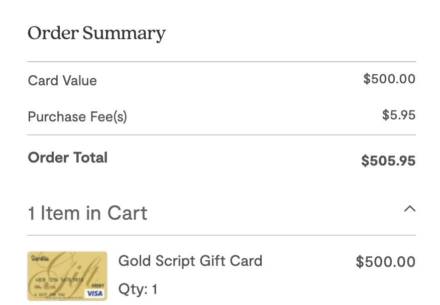

Credit card arbitrage
I recently signed up for Fidelity’s Visa Signature rewards card. It offers 2% unlimited cashback. Not bad. I started thinking about what kind of hanky panky I could pull with it. Here’s the play:
-
Use Fidelity Visa Signature to buy a $500 prepaid visa debit card for $505.95.
 - Link your new debit card to your Venmo account and pull the full $500 into your Venmo account.
- Transfer the $500 from Venmo to your checking account.
- Receive $10 in cashback the next month for a profit of $4.05.
Besides the credit card, this highly sophisticated quant strategy has one prerequisite, a Venmo debit card. It is only possible to fund your Venmo account with cash after having been approved for their debit card.
Closing remarks
- Visa sells other denominations of prepaid card but the $500 option yields the best return.
- I considered using reloadable cards but found they cannot be reloaded via credit card. However, they do have a lower upfront cost ($1-$3). If the initial load can be paid for with credit card and the various fees charged for maintaining the account can be avoided, this direction would be worth investigating more.
- This strategy can be executed multiple times a day. The first limit you might run up against is your credit limit, but that can usually be increased upon request.
- Reach out to me if you try this or think of any improvements.